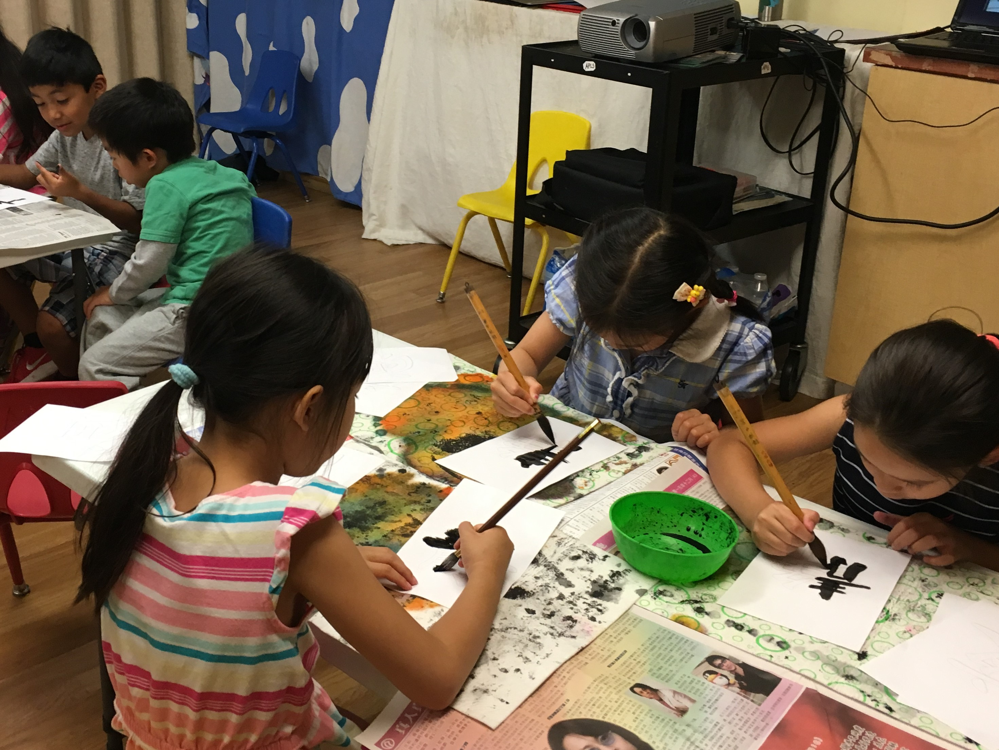
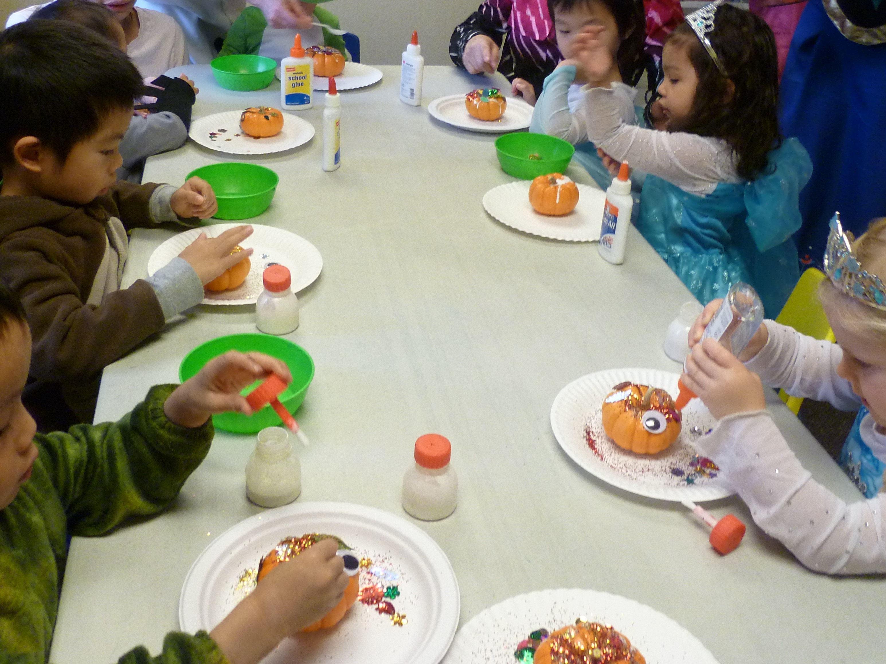
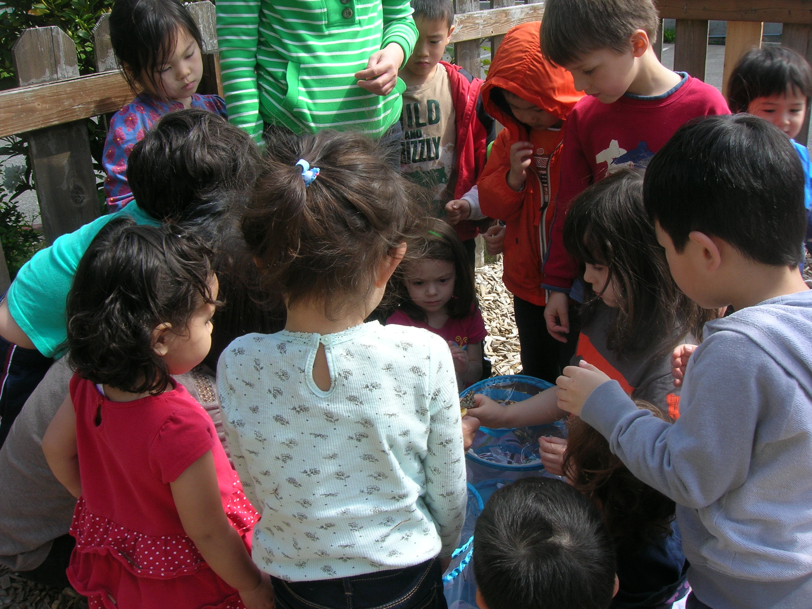

Chinese & Japanese Immersion · Bellevue · Ages 2½+ · Since 1995
Every child can learn and master a second language.
Chinese & Japanese immersion in Bellevue — starting as young as 2½.
✨ Now enrolling for the 2026–2027 school year
Chinese & Japanese Immersion · Bellevue · Ages 2½+ · Since 1995
Chinese & Japanese immersion in Bellevue — starting as young as 2½.
✨ Now enrolling for the 2026–2027 school year
From age 2½ through high school AP credit, in Chinese or Japanese. Year-round enrollment.
Ages 2½–6
Chinese or Japanese immersion through music, stories, arts & crafts, and themed play.
Learn more →Ages 5–6
Chinese/English or Japanese/English — accredited academics alongside a second language.
Learn more →Ages 6–7
Continuing the bilingual journey with a full, accredited first-grade curriculum.
Learn more →Ages 5–11
Chinese and Japanese language classes that fit around the school week.
Learn more →Ages 2½–4th grade
Mandarin or Japanese camp filled with language, culture, and summer fun.
Learn more →Ages 12–18
Chinese and Japanese AP preparation and tutoring for older students.
Learn more →Choosing your child's first school is a decision of the heart. For three decades, Bellevue families have trusted APLS with their children's earliest years — here's what they find when they walk through our doors.
Low teacher-to-student ratios — averaging 1:6 — and low teacher turnover mean your child is cared for each day by the same familiar faces: warm, college-educated teachers who majored in education and love what they do.
Young children thrive when they feel safe, loved, and happy. We nurture kindness, respect, and social skills, working hard to keep our classrooms warm and joyful — full of play, music, art, and cultural celebration, where every child grows at their own pace.
Not a once-a-week class — an accredited immersion day school with a continuous path from preschool into elementary. A child who joins us at three can grow into a confident speaker, reader, and writer. Choose Mandarin Chinese or Japanese, and we'll help them truly master it.
APLS is a non-profit. Every dollar supports our teachers and children — not shareholders — which is how we keep an accredited, dual-language education genuinely affordable. A joyful bilingual start shouldn't be only for the few.
The early years are a once-in-a-lifetime window. Young children absorb language naturally — and the benefits last a lifetime.
Young children pick up new languages with near native-like proficiency — sounds and accents that are far harder for adults to master.
Learning a second language is linked to stronger communication, higher test scores, better problem solving, and better memory.
Children grow to understand other cultures, learn more languages easily, and gain an advantage in a global world.
Asia Pacific Language School was founded in 1995 on a simple belief: that every child can learn and master a second language — and that this gift opens doors for a lifetime.
For over 30 years, we've helped Eastside families build strong foundations in language, culture, and connection. Through immersive Chinese and Japanese education, caring teachers, and meaningful cultural experiences, we nurture confident learners who embrace diversity, think globally, and are ready to thrive in an ever-changing world — in one continuous journey from preschool through the older grades.
“My son has really thrived and formed good relationships with his teachers, who are nurturing and caring, with a genuine passion for teaching young children. Not only is he learning to speak Japanese, but in doing so it has improved his English too.”
— Andrea, preschool parent
“Thank you and your Chinese teachers for all of your years of support helping my daughter attain her goal of learning Chinese. If you start young and keep at it, Chinese doesn't have to be such a ‘hard’ language to learn!”
— Peggy, parent of a former student
Warm classrooms, hands-on activities, and cultural celebrations throughout the year.




Year-round enrollment. Find tuition, application forms, the school calendar, and all the ways to reach us — in one place.
Go to EnrollmentQuestions? Contact us · 425-747-4172
The best way to know APLS is to visit. It takes two quick steps — tell us a little about your family, then pick a tour time that works for you.
Prefer to call? 425-747-4172